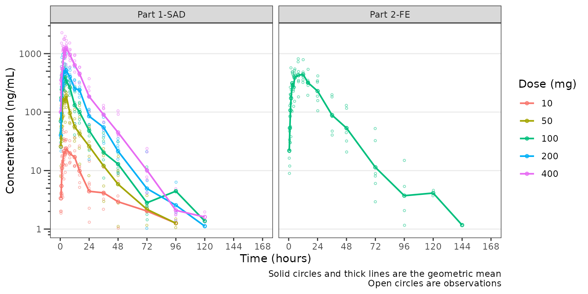
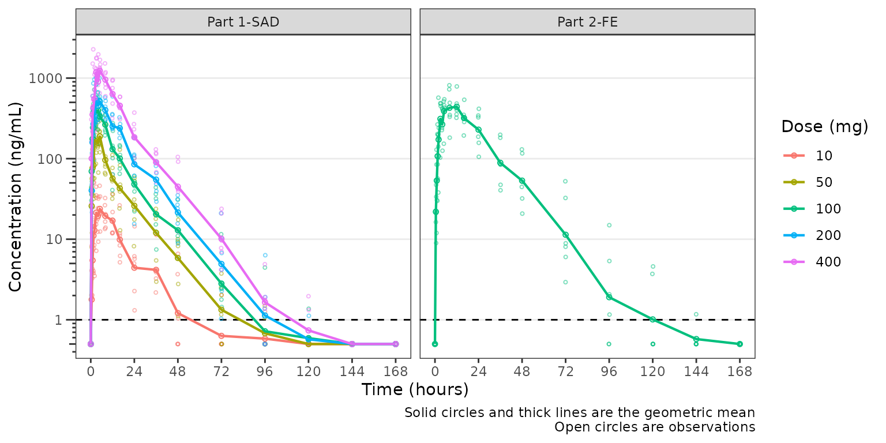
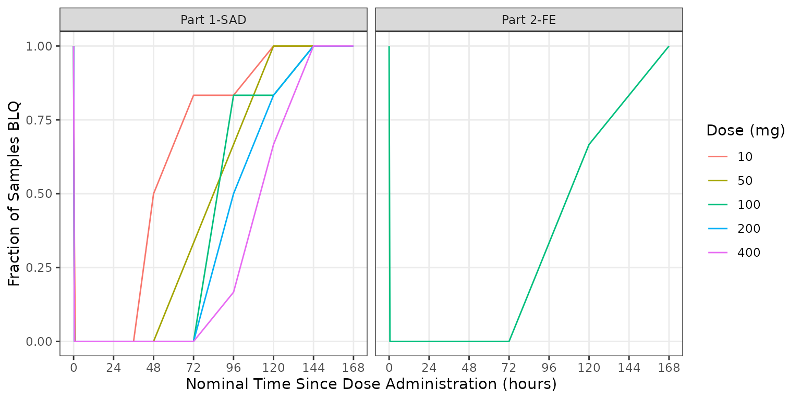
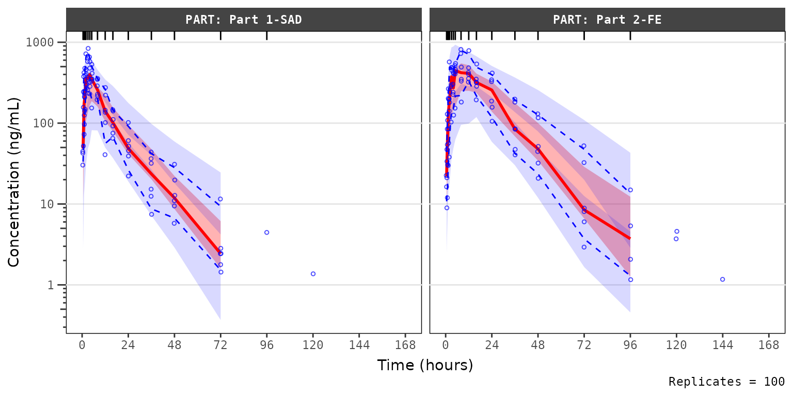
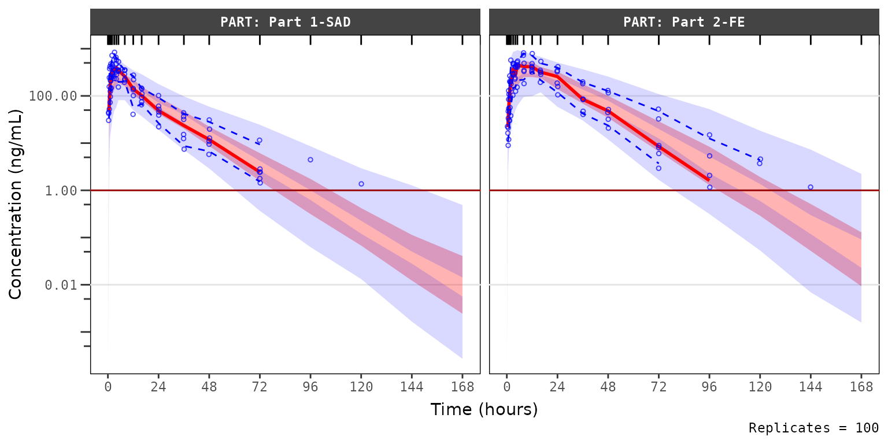
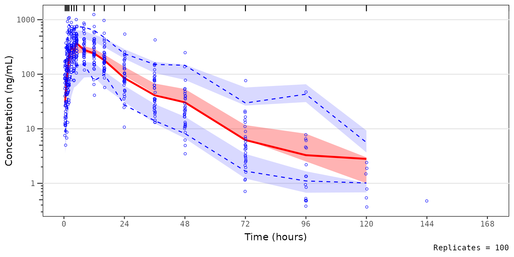

VPC Plots with BLQ Censoring
Source:vignettes/vpc-obs-quant-blq-cens.Rmd
vpc-obs-quant-blq-cens.RmdThis vignette will review the excellent functionality in the
vpc() function from the vpc package for
appropriate handling of data censored below the lower limit of
quantification (LLOQ) using the lloq argument.
vpc_plot_exactbins() takes advantage of this
functionality through the argument loq, which is also
passed to lloq in vpc().
Let’s get started. First, we will load the required packages.
options(scipen = 999, rmarkdown.html_vignette.check_title = FALSE)
library(pmxhelpr)
library(dplyr, warn.conflicts = FALSE)
library(ggplot2, warn.conflicts = FALSE)
library(vpc, warn.conflicts = FALSE)
library(mrgsolve, warn.conflicts = FALSE)
library(withr, warn.conflicts = FALSE)Next let’s explore our input dataset data_sad. This
dataset was generated via simulation from the mrgsolve
model internal to the pmxhelpr package. We can take a quick
look at the dataset using glimpse() from the
dplyr.
glimpse(data_sad)
#> Rows: 720
#> Columns: 23
#> $ LINE <dbl> 1, 2, 3, 4, 5, 6, 7, 8, 9, 10, 11, 12, 13, 14, 15, 16, 17, 18,…
#> $ ID <dbl> 1, 1, 1, 1, 1, 1, 1, 1, 1, 1, 1, 1, 1, 1, 1, 1, 1, 1, 1, 1, 2,…
#> $ TIME <dbl> 0.00, 0.00, 0.48, 0.81, 1.49, 2.11, 3.05, 4.14, 5.14, 7.81, 12…
#> $ NTIME <dbl> 0.0, 0.0, 0.5, 1.0, 1.5, 2.0, 3.0, 4.0, 5.0, 8.0, 12.0, 16.0, …
#> $ NDAY <dbl> 1, 1, 1, 1, 1, 1, 1, 1, 1, 1, 1, 1, 2, 2, 3, 4, 5, 6, 7, 8, 1,…
#> $ DOSE <dbl> 10, 10, 10, 10, 10, 10, 10, 10, 10, 10, 10, 10, 10, 10, 10, 10…
#> $ AMT <dbl> NA, 10, NA, NA, NA, NA, NA, NA, NA, NA, NA, NA, NA, NA, NA, NA…
#> $ EVID <dbl> 0, 1, 0, 0, 0, 0, 0, 0, 0, 0, 0, 0, 0, 0, 0, 0, 0, 0, 0, 0, 0,…
#> $ ODV <dbl> NA, NA, NA, 2.02, 4.02, 3.50, 7.18, 9.31, 12.46, 13.43, 12.11,…
#> $ LDV <dbl> NA, NA, NA, 0.7031, 1.3913, 1.2528, 1.9713, 2.2311, 2.5225, 2.…
#> $ CMT <dbl> 2, 1, 2, 2, 2, 2, 2, 2, 2, 2, 2, 2, 2, 2, 2, 2, 2, 2, 2, 2, 2,…
#> $ MDV <dbl> 1, NA, 1, 0, 0, 0, 0, 0, 0, 0, 0, 0, 0, 0, 1, 1, 1, 1, 1, 1, 1…
#> $ BLQ <dbl> -1, NA, 1, 0, 0, 0, 0, 0, 0, 0, 0, 0, 0, 0, 1, 1, 1, 1, 1, 1, …
#> $ LLOQ <dbl> 1, NA, 1, 1, 1, 1, 1, 1, 1, 1, 1, 1, 1, 1, 1, 1, 1, 1, 1, 1, 1…
#> $ FOOD <dbl> 0, 0, 0, 0, 0, 0, 0, 0, 0, 0, 0, 0, 0, 0, 0, 0, 0, 0, 0, 0, 0,…
#> $ SEXF <dbl> 1, 1, 1, 1, 1, 1, 1, 1, 1, 1, 1, 1, 1, 1, 1, 1, 1, 1, 1, 1, 1,…
#> $ RACE <dbl> 2, 2, 2, 2, 2, 2, 2, 2, 2, 2, 2, 2, 2, 2, 2, 2, 2, 2, 2, 2, 1,…
#> $ AGEBL <int> 25, 25, 25, 25, 25, 25, 25, 25, 25, 25, 25, 25, 25, 25, 25, 25…
#> $ WTBL <dbl> 82.1, 82.1, 82.1, 82.1, 82.1, 82.1, 82.1, 82.1, 82.1, 82.1, 82…
#> $ SCRBL <dbl> 0.87, 0.87, 0.87, 0.87, 0.87, 0.87, 0.87, 0.87, 0.87, 0.87, 0.…
#> $ CRCLBL <dbl> 128, 128, 128, 128, 128, 128, 128, 128, 128, 128, 128, 128, 12…
#> $ USUBJID <chr> "STUDYNUM-SITENUM-1", "STUDYNUM-SITENUM-1", "STUDYNUM-SITENUM-…
#> $ PART <chr> "Part 1-SAD", "Part 1-SAD", "Part 1-SAD", "Part 1-SAD", "Part …Let’s visualize the data. First, we will derive a factor variable from DOSE to pass to the color aesthetic, as well as, a dependent variable (DV) with BLQ values imputed to 1/2 x LLOQ.
plot_data <- data_sad %>%
filter(EVID == 0) %>%
mutate(`Dose (mg)` = factor(DOSE),
DV = case_when(BLQ == 0 ~ ODV,
BLQ %in% c(-1, 1) ~ LLOQ/2,
.default = NA_real_),
DNDV = ODV/DOSE)Now let’s plot the data using ODV colored by DOSE and faceted by PART. The concentration-time profiles increase with dose with some potential impact of censoring at the LLOQ in the late terminal phase.
ggplot(aes(x = TIME, y = ODV, col = `Dose (mg)`), data = plot_data)+
geom_point(shape = 1, alpha = 0.5)+
stat_summary(fun = "mean", geom = "point",
aes(x = NTIME, y = ODV, col = `Dose (mg)`), inherit.aes = FALSE) +
stat_summary(fun = "mean", geom = "line",
aes(x = NTIME, y = ODV, col = `Dose (mg)`), inherit.aes = FALSE) +
geom_hline(yintercept = unique(plot_data$LLOQ), linetype = "dashed")+
scale_x_continuous(breaks = seq(0,168,24))+
scale_y_log10()+
facet_wrap(~PART)+
labs(y = "Concentration (ng/mL)", x = "Time Since Dose Administration (hours)")+
theme_bw()
Imputing post-dose concentrations below the lower limit of quantification as 1/2 x LLOQ normalizes the late terminal phase of the concentration-time profile. This suggests that the artifact in the late terminal phase is due to censoring of observations below the LLOQ, which impacts lower doses more than higher doses.
ggplot(aes(x = TIME, y = DV, col = `Dose (mg)`), data = plot_data)+
geom_point(shape = 1, alpha = 0.5)+
stat_summary(fun = "mean", geom = "point",
aes(x = NTIME, y = DV, col = `Dose (mg)`), inherit.aes = FALSE) +
stat_summary(fun = "mean", geom = "line",
aes(x = NTIME, y = DV, col = `Dose (mg)`), inherit.aes = FALSE) +
geom_hline(yintercept = unique(plot_data$LLOQ), linetype = "dashed")+
scale_x_continuous(breaks = seq(0,168,24))+
scale_y_log10()+
facet_wrap(~PART)+
labs(y = "Concentration (ng/mL)", x = "Time Since Dose Administration (hours)")+
theme_bw()
Indeed, while pharmacokinetic data are generally treated as continuous log-normally distributed data, in reality the distribution is truncated by the lower limit of quantification of the assays used in bioanalysis.
Therefore, whenever evaluating concentration-time plots, we hould
keep in mind the assay limitations and their potential impact on visual
trends. To examine this further, let’s visualize the two different
concentrations variables in the plot_data object for a
single dose:
-
ODV: Original dependent variable based on the source data. Data below the LLOQ are censored and set to missingNA. -
DV: Derived dependent variable with data below the LLOQ set to0.5 x LLOQ.
We will focus in on the 100 mg dose, which is included in both Part1-SAD and Part2-FE, and appears to display some of the most visual artifact potentiall due to censoring at the LLOQ.
plot_data100 <- plot_data %>%
filter(DOSE == 100)
ggplot(aes(x = TIME, y = ODV), data = plot_data100)+
geom_point(shape = 1, alpha = 0.5)+
stat_summary(fun = "mean", geom = "point",
aes(x = NTIME, y = ODV, col = "DV (>LLOQ)"), inherit.aes = FALSE) +
stat_summary(fun = "mean", geom = "line",
aes(x = NTIME, y = ODV, col = "DV (>LLOQ)"), inherit.aes = FALSE) +
stat_summary(fun = "mean", geom = "point",
aes(x = NTIME, y = DV, col = "DV (>0.5LLOQ)"), inherit.aes = FALSE) +
stat_summary(fun = "mean", geom = "line",
aes(x = NTIME, y = DV, col = "DV (>0.5LLOQ)"), inherit.aes = FALSE) +
geom_hline(yintercept = unique(plot_data$LLOQ), linetype = "dashed")+
scale_x_continuous(breaks = seq(0,168,24))+
scale_y_log10()+
scale_color_manual(name = "Data Handling",
breaks = c("DV (>LLOQ)", "DV (>0.5LLOQ)"),
values = c("DV (>LLOQ)" = "#440154FF", "DV (>0.5LLOQ)" = "#21908CFF"))+
facet_wrap(~PART)+
labs(y = "Concentration (ng/mL)", x = "Time Since Dose Administration (hours)")+
theme_bw()We can see in these plots that the central tendency of the late terminal phase is influenced by censoring at the LLOQ. This leads to visual artifact, which may sometimes appear like another log-linear slope. The exact pattern of impact will depend on the dose intensity, the assay sensitivity, and the study sampling scheme.
The relative impact of the unobserved portion of the distribution of concentration can be further visualized as histograms facetted by nominal sampling time. These distributions are pooled across both Part 1-SAD and Part 2-FE for the 100 mg in these histograms.
ggplot(aes(x = DV), data = filter(plot_data100, NTIME %in% seq(24,144,24), DOSE == 100))+
geom_histogram()+
geom_vline(xintercept = unique(plot_data$LLOQ), linetype = "dashed", color = "red")+
scale_x_log10()+
facet_wrap(~NTIME)+
labs(y = "Density", x = "Concentration (ng/mL)")+
theme_bw()
If the study protocol had only included sampling through 72 hours, then the impact of censoring at the assay LLOQ would have been negligible for a single 100 mg dose, regardless of food condition. However, a large portion of the distribution of concentrations is BLQ at later timepoints the one week duration of sampling.
It is expected that the frequency of censored data at the LLOQ will increase with increasing time from dose administration. Additionally, it is expect that the frequency of of censored data below the LLOQ will decrease with increasing dose intensity.
We can visualize this by summarizing the fraction of samples that are
missing due to assay sensitivity (MDV=1) by timepoint,
dose, and study part.
plot_data_sumblq <- plot_data %>%
group_by(DOSE, `Dose (mg)`,NTIME, PART) %>%
summarize(`Fraction BLQ`= mean(MDV)) %>%
ungroup()
ggplot(aes(x = NTIME, y = `Fraction BLQ`, col = `Dose (mg)`), data = plot_data_sumblq)+
geom_line()+
scale_x_continuous(breaks = seq(0,168,24))+
facet_wrap(~PART)+
labs(y = "Fraction of Samples BLQ", x = "Nominal Time Since Dose Administration (hours)")+
theme_bw()
In summary, the observed patters of BLQ data were in the example dataset are anticipated for an early phase clinical study. - increasing frequency of BLQ data with increasing time - decreasing frequency of BLQ data with increasing dose
BLQ data are often ignored (i.e., set as missing; M1 method) in population PK model development. This is unlikely to introduce appreciable bias in model parameter estimation, provided the absolute frequency of BLQ data is low (e.g., <10-20%) and the pattern of BLQ censoring is in line with the expectations by dose and in time.
However, just as BLQ censoring introduced some artifact to the explortory plots of concentration over time, the handling of BLQ data in VPCs may impact the interpretation of these graphical model diagnostics.
Lets run a simulation and generate some VPC plots to demonstrate the impact of different approaches to BLQ handling to the visual assessment of the adequacy of model fit and the true underlying PK profile.
model <- model_mread_load("model")
#> Building model_cpp ... done.
simout <- df_mrgsim_replicate(data = data_sad, model = model,replicates = 100,
time_vars = c(TIME = "TIME", NTIME = "NTIME"),
output_vars = c(PRED = "PRED", IPRED = "IPRED", DV = "ODV"),
num_vars = c("CMT", "BLQ", "LLOQ", "EVID", "MDV", "DOSE", "FOOD"),
char_vars = c("PART"),
obsonly = TRUE)Let’s start by focusing on evaluating the model fit of the 100 mg dose level we have been exploring across Part1-SAD and Part2-FE.
There are two potential approaches proccessing and plotting the VPC:
-
Exclude BLQ: remove missing observations (MDV=1) in both the observed and simulated data -
Censor Observed Quantiles: set quantiles of the observed dataNA, if the sample representing that quantile of the observed is BLQ (MDV=1) in the bin.
Let’s plot using the default arguments to
plot_vpc_exactbins(). The default behavior is
Exclude BLQ, which filters out MDV=1.
vpc_blq_drop <- plot_vpc_exactbins(
sim = sim100,
time_vars = c(TIME = "TIME", NTIME = "NTIME"),
output_vars = c(PRED = "PRED", IPRED = "IPRED", SIMDV = "SIMDV", OBSDV = "OBSDV"),
pi = c(0.05, 0.95),
ci = c(0.05, 0.95),
log_y = TRUE,
xlab = "Time (hours)",
ylab = "Concentration (ng/mL)",
strat_var = "PART"
)
vpc_blq_drop
The observed median appears consistent with the exploratory
concentration-time profiles generated earlier excluding data below the
lower limit of quantification (ODV). Notice that the
increasing trend in the observed quantiles at later timelines coincides
with completely overlapping simulated confidence intervals for all
quantiles. This is due to the decreasing sample size with time due to
exclusion of timeplints where MDV=1.
Let’s instead try specifying a new argument loq to
plot_vpc_exactbins().
loq is the numeric value of the lower limit of
quantification in the units of the dependent variable. It primarily
serves as an alias for lloq in vpc::vpc(),
leveraging BLQ handling functionality already built into that
package.
vpc_blq_qobs_cens <- plot_vpc_exactbins(
sim = sim100,
time_vars = c(TIME = "TIME", NTIME = "NTIME"),
output_vars = c(PRED = "PRED", IPRED = "IPRED", SIMDV = "SIMDV", OBSDV = "OBSDV"),
log_y = TRUE,
xlab = "Time (hours)",
ylab = "Concentration (ng/mL)",
strat_var = "PART",
loq = 1
)
vpc_blq_qobs_cens Now we see a red horizontal line depicting the LLOQ (1 ng/mL). Notice also the increase in the y-axis range, the change in the shape of the observed quantiles, and the greater resolution in separation between the confidence intervals.
Specifying loq assumes that in the input dataset for the
plot, sim, MDV=1 represents only BLQ
samples (e.g., EVID = 0). The MDV variable in
sim is set to zero (0) so that all timepoints are
included.
- In the calculation of the summary statistics of the observed data,
the quantiles are calculated across all data per bin and taken as
NAwhen that quantile of observations is belowloq. - In the calcluation of summary statistics of the simulated data, the simulated confidence intervals are based on all data without any censoring, which is representative of the model-predicted “true” underlying PK profile in the absence of real-world assay limitations.
Specifying loq is the preferred method for plotting VPC
diagnostics with the pmexhelpr package.This is not the
default method due to the all-too-common case where the assay LLOQ is
not known to the analyst. Additionally, this method of accounting for
the censoring of data below the LLOQ by specifying the loq
argument should only be applied to Visual Predictive Checks
(pcvpc = FALSE) and should not be applied to
Prediction-corrected Visual Predictive Checks
(pcvpc = TRUE).
Ifloq is specified withpcvpc = TRUE, an
error message will print from vpc::vpc().
vpc_pc <- plot_vpc_exactbins(
sim = simout,
time_vars = c(TIME = "TIME", NTIME = "NTIME"),
output_vars = c(PRED = "PRED", IPRED = "IPRED", SIMDV = "SIMDV", OBSDV = "OBSDV"),
pi = c(0.05, 0.95),
ci = c(0.05, 0.95),
log_y = TRUE,
xlab = "Time (hours)",
ylab = "Concentration (ng/mL)",
pcvpc = TRUE,
loq = 1
)
#> Joining with `by = join_by(NTIME)`
#> Joining with `by = join_by(NTIME)`
#> Prediction-correction cannot be used together with censored data (<LLOQ or
#> >ULOQ). VPC plot will be shown for non-censored data only!
vpc_pc